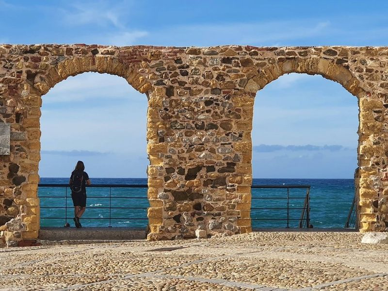
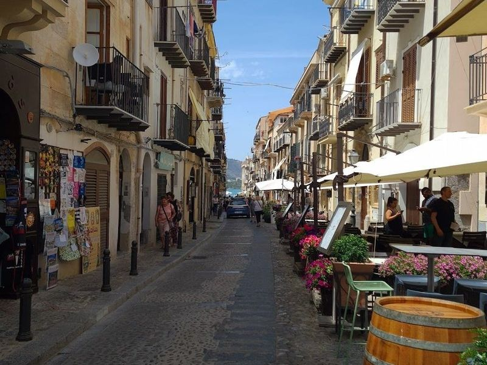
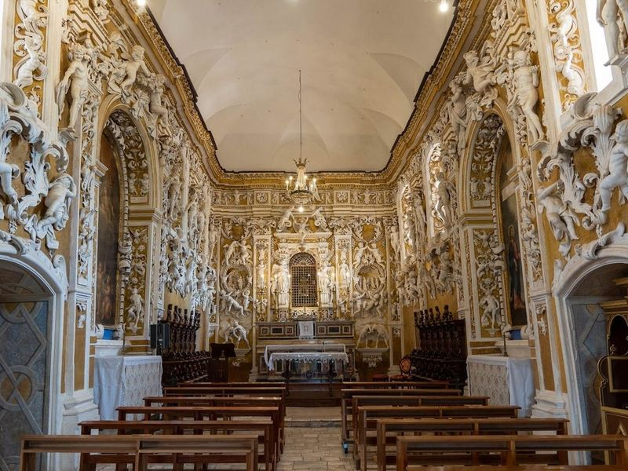
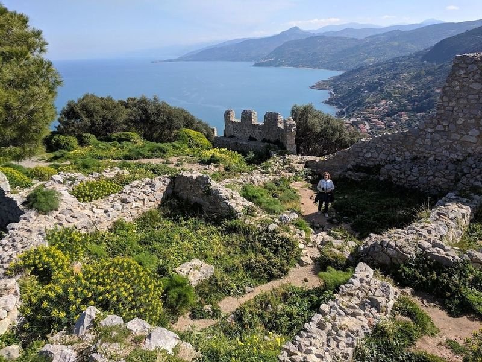
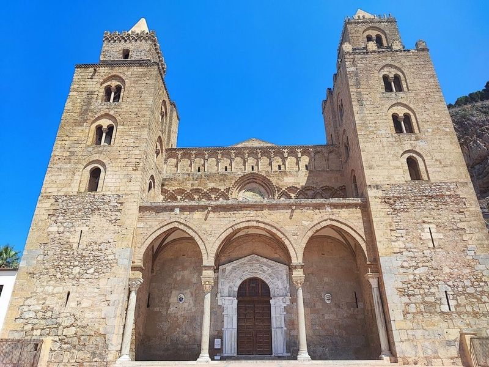
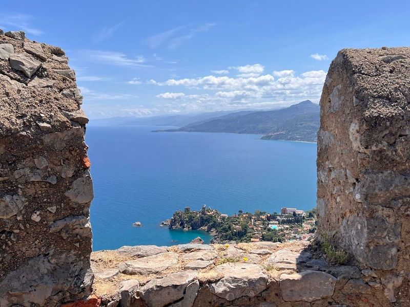
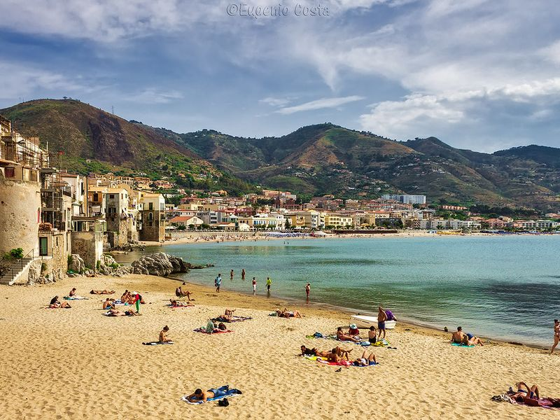
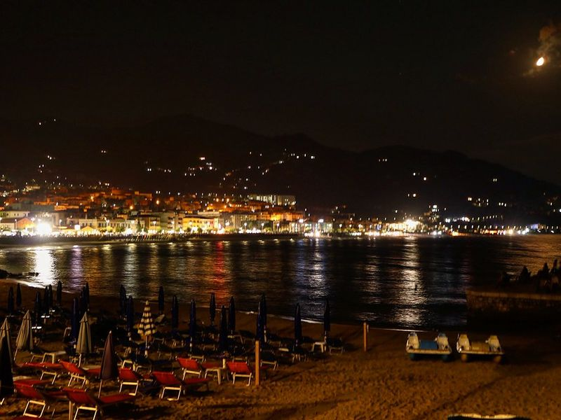
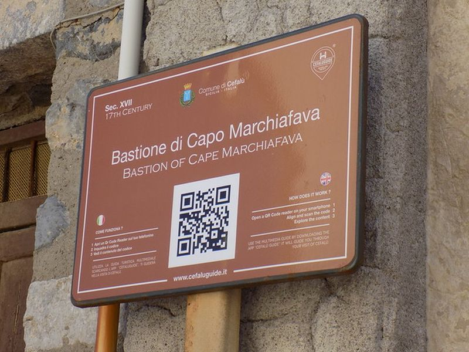
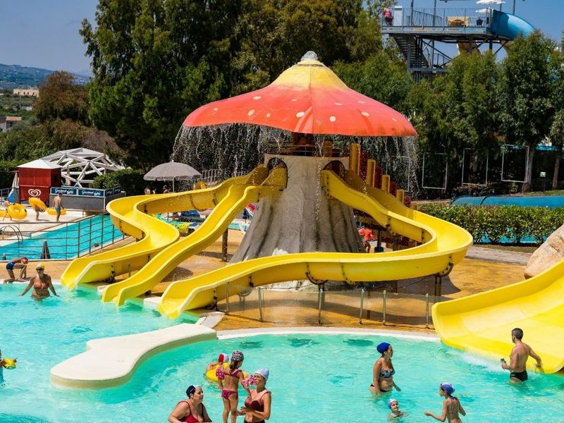

Explore Cefalù
A Brief History
Cefalù developed under Roger II of Sicily, who founded the cathedral with twin towers facing the Tyrrhenian in 1131 after vowing to build it if spared in a storm. Fishermen and farmers lived within medieval walls beneath the Rocca cliff that Greeks and Arabs also fortified. Later Spanish watchtowers and nineteenth-century seaside promenades turned the town toward tourism while laundry stones along the coast and Norman mosaics inside the abbey record earlier layers of Sicilian maritime life.
Attractions Map
Top Sights & Activities

Porta Pescara (Porta Marina)
Porta Pescara, also known as Porta Marina, is a historic 12th-century gate that stands proudly in Cefalu, a coastal town steeped in history. This gateway was constructed during the Norman era and serves as an entrance to the sandy beaches of Spiaggia del Porto Vecchio and the picturesque old port.

Lavatoio Medievale
Lavatoio Medievale Fiume Cefalino in Cefalù (PA) is a restored public laundry house dating back to 1514, featuring original stone wash basins and cast-iron spouts. In the old city, this medieval laundry was a gathering place for women to wash and rinse clothing, and possibly even bathe in large basins arranged in a stepped sequence.

Castello di Castelbuono
Castello di Castelbuono has a rich history dating back to 1081, with references to its construction during the Swabian era. Situated on a wooded hill bordered by two streams, it offers views over the valley and village of Castelbuono. The castle features an internal courtyard with stairs leading to exhibition spaces on each floor, culminating in views at the top.

Ruins of Cefalù Castle
Castello di Cefalù, a Norman castle built on the site of an old Arab citadel, offers travellers a chance to explore its ruins and enjoy views of Cefalu and the surrounding area. The hike up is relatively easy, with well-defined trails and some rocky terrain. Along the way, hikers can also visit the temples of Diana and St. Anna.

Duomo di Cefalù
Cathedral of Cefalù is a fortress-like Norman cathedral with Byzantine mosaics and twin towers. It's emblematic of Arab and Norman qualities, located in the historic center. The site is catalogued as a cultural landmark. The site is catalogued as a cultural landmark.

Rocca di Cefalù
Rocca di Cefalù, also known as u castieddu, is a prominent cliff rising 268 meters above the town of Cefalù on the Tyrrhenian coast. This fortified mountain top offers coastal views and is home to the ruins of a Norman castle. The Rocca's base forms a triangular shape with steep ridges facing east, west, and south, making it an important landmark for navigation along the coast.

Spiaggia di Cefalù
A popular sandy beach offering crystal-clear waters and picturesque views, used for swimming and sunbathing. The site is catalogued as a beach. The site is catalogued as a beach. The site is catalogued as a beach. Spiaggia di Cefalù is listed among principal sites for Cefalù within Italy.

Lungomare di Cefalú
A scenic seaside promenade lined with cafes and shops, ideal for leisurely walks along the coast. The site is catalogued as a tourist attraction. The site is catalogued as a tourist attraction. The site is catalogued as a tourist attraction. Lungomare di Cefalú is listed among principal sites for Cefalù within Italy.

Bastione di Capo Marchiafava
An old defensive bastion providing views of the sea and surrounding landscape. The site is catalogued as a tourist attraction. The site is catalogued as a tourist attraction. The site is catalogued as a tourist attraction. Bastione di Capo Marchiafava is listed among principal sites for Cefalù within Italy.

Acqua Verde
Kalura Beach in Cefalu is a picturesque spot with pebbles instead of sand and rocks. It offers opportunities for diving from various heights and excellent snorkeling experiences. The beach is surrounded by lush Mediterranean vegetation, including desert plants. Accessible via a scenic hike from Cefalu, it provides views on all sides. Despite being small, it's uncrowded and easily reachable by bus.